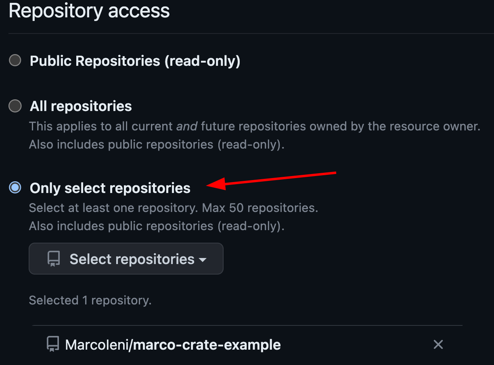

Triggering further workflow runs
GitHub Actions using the default
GITHUB_TOKEN
cannot trigger other workflows.
For example:
on: pull_requestoron: pushworkflows acting as checks on pull requests opened by GitHub Actions won’t run.on: releaseoron: push: tagsworkflows acting on releases or tags created by GitHub actions won’t run.
You can learn more in the GitHub docs.
How to trigger further workflow runs
Release-plz doesn’t need to trigger further workflow runs to release your packages. However, if you want to run CI checks on the release PR, or if you want to trigger another workflow after release-plz pushes a tag or creates a release, you need to use one of the following methods.
Trigger workflow manually
To run on: pull_request workflows you can manually close and reopen the release pull request.
Use a Personal Access Token
Use a Personal Access Token (PAT) created on an account with write access to the repository. This is the standard method recommended by GitHub.
Note that the account that owns the PAT will be the author of the release pull request. If you don’t want release-plz to open release pull requests with your account, consider creating a machine user. If your machine user needs a cool avatar, you can use the release-plz logo).
{kind=link}
Create the PAT, choosing one of the two types:
- Fine-grained:
more secure because you can select the repositories where the PAT can be used.
Release-plz needs the following:
- Select the repositories where you want to use the PAT, to give release-plz write access: 
- Assign “Contents” and “Pull requests” read and write permissions:

- Classic:
less secure because you can’t scope it to a single repository.
Release-plz needs
repopermissions:
Once you generated your token, save it in the
secrets,
and pass it to both the actions/checkout and release-plz actions:
jobs:
release-plz:
name: Release-plz
runs-on: ubuntu-latest
steps:
- name: Checkout repository
uses: actions/checkout@v3
with:
fetch-depth: 0
token: ${{ secrets.RELEASE_PLZ_TOKEN }} # <-- PAT secret name
- name: Install Rust toolchain
uses: dtolnay/rust-toolchain@stable
- name: Run release-plz
uses: MarcoIeni/release-plz-action@v0.5
env:
GITHUB_TOKEN: ${{ secrets.RELEASE_PLZ_TOKEN }} # <-- PAT secret name
CARGO_REGISTRY_TOKEN: ${{ secrets.CARGO_REGISTRY_TOKEN }}
Use a GitHub Action
Generate a GitHub token with a GitHub App. This is the approach used by the release-plz repo itself. With this approach, the GitHub App will be the author of the release pull request.
Here’s how to use a GitHub app to generate a GitHub token:
-
Create a minimal GitHub App, setting the following fields:
- Set
GitHub App name. - Set
Homepage URLto anything you like, such as your GitHub profile page. - Uncheck
ActiveunderWebhook. You do not need to enter aWebhook URL. - Under
Repository permissions: ContentsselectAccess: Read & write. - Under
Repository permissions: Pull requestsselectAccess: Read & write. - (Optional) Set the release-plz logo.
- Set
-
Create a Private key from the App settings page and store it securely.
-
Install the App on the repositories where you want to run release-plz.
-
Store the GitHub App ID, and the private key you created in step 2 in GitHub secrets. E.g.
APP_ID,APP_PRIVATE_KEY. -
Use tibdex/github-app-token to generate a token from the GitHub Action:
steps: # Generating a GitHub token, so that PRs and tags created by # the release-plz-action can trigger actions workflows. - name: Generate GitHub token uses: tibdex/github-app-token@v1 id: generate-token with: app_id: ${{ secrets.APP_ID }} # <-- GitHub App ID secret name private_key: ${{ secrets.APP_PRIVATE_KEY }} # <-- GitHub App private key secret name - name: Checkout repository uses: actions/checkout@v3 with: fetch-depth: 0 token: ${{ steps.generate-token.outputs.token }} - name: Install Rust toolchain uses: dtolnay/rust-toolchain@stable - name: Run release-plz uses: MarcoIeni/release-plz-action@main env: GITHUB_TOKEN: ${{ steps.generate-token.outputs.token }} CARGO_REGISTRY_TOKEN: ${{ secrets.CARGO_REGISTRY_TOKEN }}
How to trigger further workflows
You can trigger workflows on different events. For example:
-
When a GitHub release is published:
on: release: types: [published] -
When a git tag is pushed:
on: push: tags: - "*"